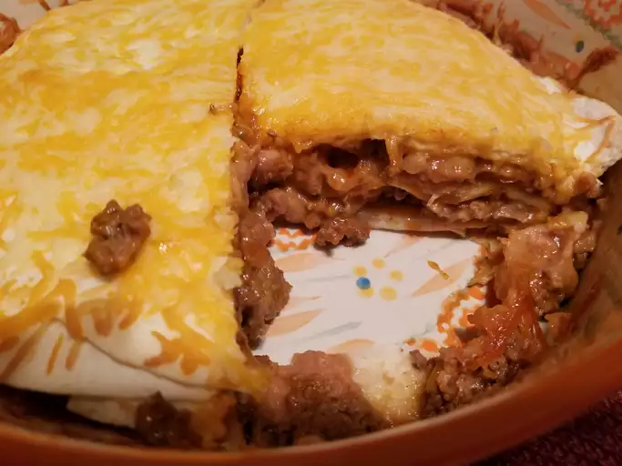

Lasagna

- Put pasta water on to boil.
- Brown the ground beef.
- Cook the bell pepper, onions, garlic, add back the beef.
-
Transfer to medium sized pot, add tomatoes and remaining sauce
ingredients to build the sauce.
- Boil and drain the lasagna noodles.
- Heat the oven to 375°F.
- Assemble the lasagna.
- Bake.
2 teaspoons extra virgin olive oil
1 pound ground beef chuck
1/2 medium onion, diced (about 3/4 cup)